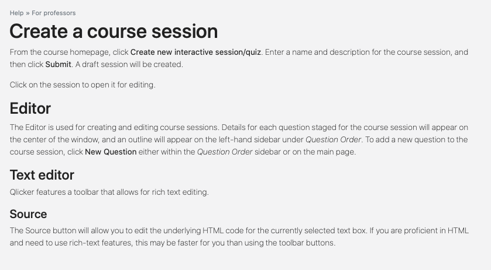
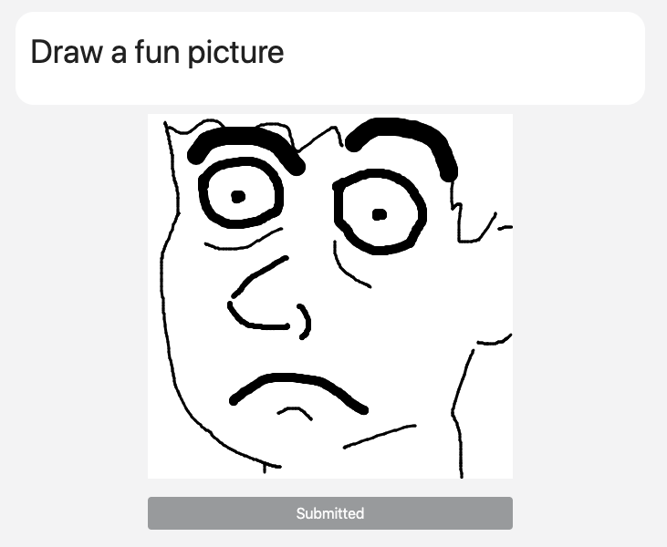

uQlick is a web application with the goal of making lectures more interactive and engaging through quick pop-quiz sessions.
Especially when college lecture sessions run on for hours at a time, it can be difficult for professors to keep their students engaged. With uQlick, the professor can easily perform spontaneous pop-quizzes for their students in the middle of lecture, allowing them to gague how well the material is being understood, and giving the students a chance to exercise their understanding.
uQlick is an expansion of the open-source project Qlicker.
Features of Qlicker and uQlick:
-
From their computer, professors can set up courses and lecture sessions with questions for students to answer.
- During lecture, the professor can control the flow of the lecture session from either their computer or their smartphone.
-
Students can access live lecture sessions from their smartphone, tablet, or laptop during lecture, and respond to questions as the professor asks them.
- Student response statistics show up instantly for the professor, so they can easily gague student understanding.
- Once a lecture session is complete, the professor can review individual students' responses to identify points of strength or weakness.
Features unique to uQlick:
- Institutions - Qlicker was originally designed for one school to use at a time. For uQlick, the database structure was expanded to allow for many different schools, or institutions, to use at once without encroaching on others' information.
- User documentation - A new Help page system was created for uQlick, which makes it quicker for users to find information specific to their situation as well as easier for developers to modify it.
- Numerical answer number base - One of the question types available in Qlicker was the numerical question, in which students must type a number as an answer. uQlick allows binary, octal, and hexadecimal numbers to be entered, depending on the professor's preference for a given question.


- Multiple choice answer shuffle - Qlicker features multiple-choice questions, where the potential answers would keep the same order. In uQlick, professors can choose to have the potential answers shuffled on a per-student basis.
- Sketch answer - uQlick introduces a new question type, in which students are given a prompt and asked to draw a small sketch as a response.
- Bootstrap 4 and UI upgrades - uQlick was upgraded to use Bootstrap 4 components and Google Material icons. Additionally, a few icons were custom-designed for uQlick.